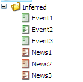

This tutorial will demonstrate how you can used inferred types in Glass.Mapper. Inferred types allows you to load a more specific type based on the template of the item being loaded.
This probably sounds a bit to abstract so lets look at a specific example. Lets say we have an item that has a collection of News and Event items as children.
These News and Events items both inherit from the template content base and allows me to create the following class struture:
public class ContentBase
{
public virtual Guid Id { get; set; }
public virtual string Url { get; set; }
public virtual string Title { get; set; }
public virtual string Body { get; set; }
}
[SitecoreType(TemplateId = "{4D6B4325-1C3B-46E7-B387-49C450D8A66C}", AutoMap = true)]
public class Event : ContentBase
{
public virtual DateTime EventStart { get; set; }
public virtual DateTime EventEnd { get; set; }
}
[SitecoreType(TemplateId = "{1DC28C75-E348-4328-BAB8-752304B1CFBB}", AutoMap = true)]
public class News : ContentBase
{
public virtual DateTime ArticleDate { get; set; }
}
We can see that the News and Event class inherit from the ContentBase class, so when I load my items as child items of another class I want them to load a specific types, e.g. the News item loads as a News class and the Event item loads as an Event class. To make this work these classes must have a template ID specified in the SitecoreType attribute and both classes (Event, News) inherit from a common class (ContentBase).
With these classes created we need to define out landing model that will load the children:
[SitecoreType(AutoMap = true)]
public class Landing
{
[SitecoreChildren(InferType = true)]
public virtual IEnumerable<ContentBase >Children { get; set; }
}
Notice that on the Children property the SitecoreChildren attribute has "InferType = true", this flags to Glass.Mapper that it should check the template of the item being loaded and try to find a more specific type to load (Event or News).
With these classes created we can create the following rendering, I have used the Razor synax below:
<h1>What is going on?</h1>
<ul>
@foreach (var child in Model.Children)
{
if (child is News)
{
var news = child as News;
<li>
@news.Title - @news.ArticleDate.ToString("dd MMM yyyy")
</li>
}
else if(child is Event)
{
var evt = child as Event;
<li>
@evt.Title - @evt.EventStart.ToString("dd MMM yyyy") to @evt.EventEnd.ToString("dd MMM yyyy")
</li>
}
}
</ul>
Notice that as we loop through the list of children I check the objects type and change the rendering depending on what type it turns out to be, when we load the page we get the following:
If for some reason it turned out that your item wasn't either a News item or an Event item then Glass.Mapper would create it as ContentBase object.